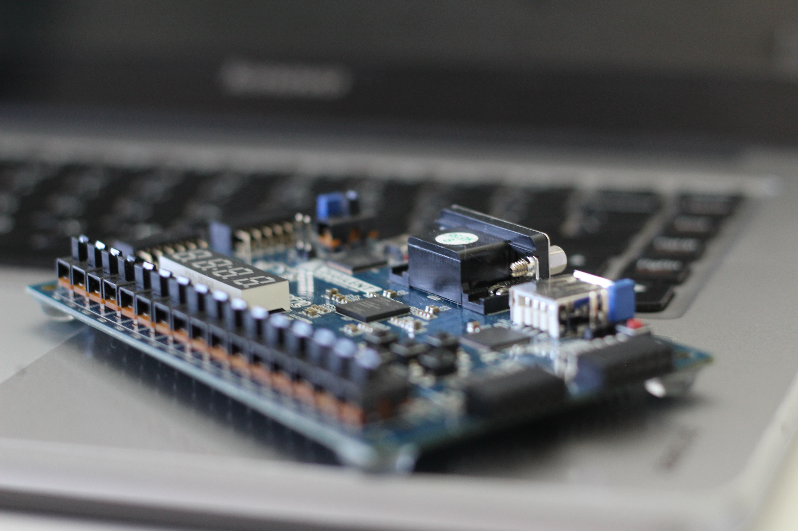

A Quick History Lesson: The Black Death
By Hayden Gemeinhardt, October 5, 2020
Let’s all take a moment to appreciate how computers have left some of our lives relatively unaffected the last few months... Read More
The Future of Autonomous Trucking
By Hayden Gemeinhardt, September 5, 2020

Andrew Yang in the 2020 Democratic presidential nomination race was a breath of fresh air amongst the opposing lifetime politicians. Although I am unsure if I would... Read More
[Blank] Should Get More Attention
By Hayden Gemeinhardt, September 4, 2020
The other day, I went to go read some computer science blogs. One of them I read was Computational Complexity. It had a lot of interesting articles, and a lot of... Read More
What's All The Fuss About FPGAs?
By Hayden Gemeinhardt, August 28, 2020
Over the summer break, I began trying to get involved in research as I now had the core basics of computer science to start doing so. Luckily, I was able to meet with... Read More
Why Laptop Gaming Is (Usually) Not A Good Idea
By Hayden Gemeinhardt, June 6, 2020

I want to emphasize generally here, as everyone’s situation differs. I, for one, am currently using a gaming laptop after coming from a PC, and I do not regret it. I am away at my university... Read More
The Importance of Humility (And Why I Am Starting To Post My Writings)
By Hayden Gemeinhardt, May 28, 2020
What better way to write my first article than to talk about humility? It is no surprise I am an amateur at best when it comes to writing. I am aware of this, perhaps too much, as I’m sure we all are... Read More